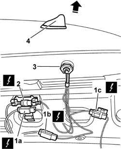
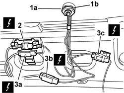

5570T59 MULTIPURPOSE AERIAL - R R WITH ROOF PANEL TRIM REMOVED
- Path
- Procedures > 55 ELECTRICAL EQUIPMENT > 5570 ACCESSORIES > 5570T CAR RADIO AND CAR TELEPHONE > 5570T59 MULTIPURPOSE AERIAL - R R WITH ROOF PANEL TRIM REMOVED
- Kind
- repair procedure (removal / refitting; the operation number is the code)
- Applies to
- all engines; all production periods
- Interactive page
- https://sloeber94.github.io/elrnDB-aGt/en/#/125001712
Applies to: all engines; all production periods
 Removing
Removing
 Refitting
RefittingOp. 5570T61 MULTI-FUNCTION AERIAL - R R
1. Disconnect electrical connections (1a), (1b) and (1c).
Name | Connector | |
|---|---|---|
1a | Aerial amplifier feeder | See P25 AERIAL AMPLIFIER FEEDER ( REAR ) |
Name | Connector | |
|---|---|---|
1b | Aerial amplifier feeder | See P25 AERIAL AMPLIFIER FEEDER ( REAR ) |
Name | Connector | |
|---|---|---|
1c | Aerial amplifier feeder | See P25 AERIAL AMPLIFIER FEEDER ( REAR ) |
2. Disconnect the aerial lead connection.
3. Undo the special nut.
4. Remove the aerial mount with leads.

Applies to: all engines; all production periods
Refitting
RemovingCheck that the aerial mount is undamaged.
Fit aerial mount in its seating.
1. Tighten special nut (1a), keeping leads inserted in slot (1b) in order not to crush them.
 | Fastening | Component | Ø | Value (daNm) |
|---|---|---|---|---|
1a | Nut | MULTIFUNCTIOANA AERIAL | - | 0.7 |
2. Connect the aerial lead connection.
3. Connect the electrical connections (3a) and (3b).

Applies to: all engines; all production periods